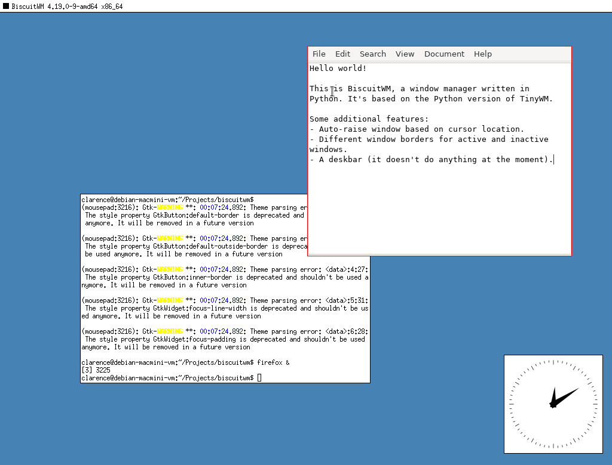

BiscuitWM is an X11 window manager based on the Python version of TinyWM by Nick Welch and xpywm by Hiroyuki Ohsaki.
The intent of this window manager project is largely to expand my understanding of the X11 libraries via Python. However, it should be good for some basic use cases such as lightweight virtual machines or a Raspberry Pi.
In terms of hardware requirements, as long as it could run Python and your applications (probably a Raspberry Pi is more than good enough). As for the operating system, perhaps Linux (specifically any Debian-based distribution) should suffice.
You should have the following packages installed on your system:
Use git to clone the project's GitHub repository onto your system, or download the ZIP archive from GitHub (which then has the extra step of extracting the archive).
Open a terminal in the project directory, and run the install.sh script as sudo. This will copy the source file, a shell script that runs the source file via Python, and the session files to the system directories.
The project files include an uninstall script that removes the aforementioned copied files.
Hovering your cursor over a window will automatically raise it and make it the window with input focus.
Future iterations to BiscuitWM will add titlebars to windows, and may turn hover-to-raise behaviour into an optional feature. Configuration will eventually be done via a JSON file.